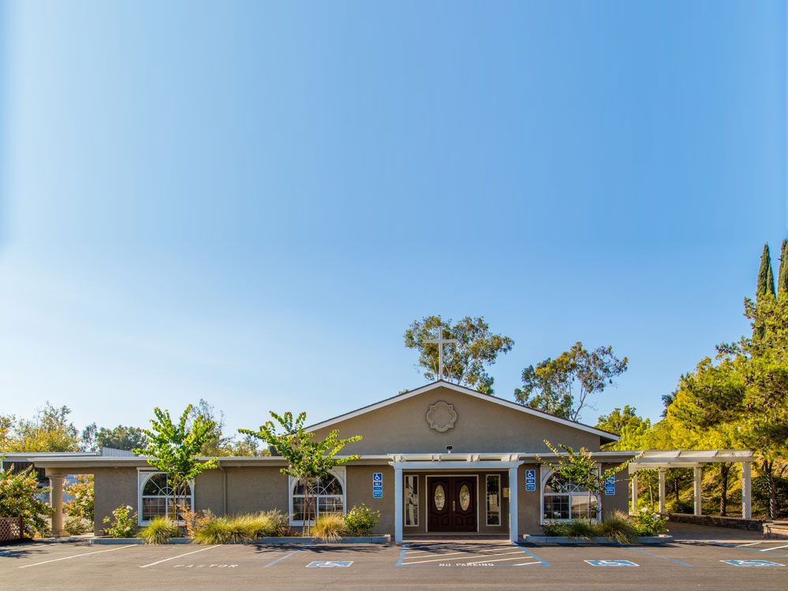
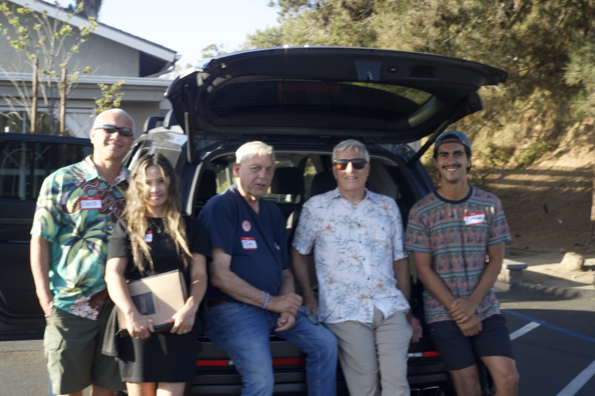
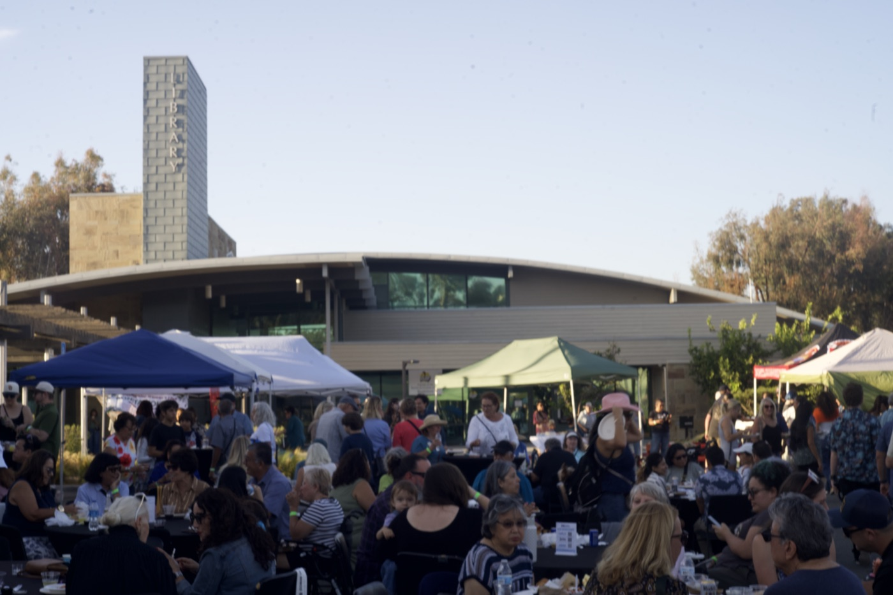
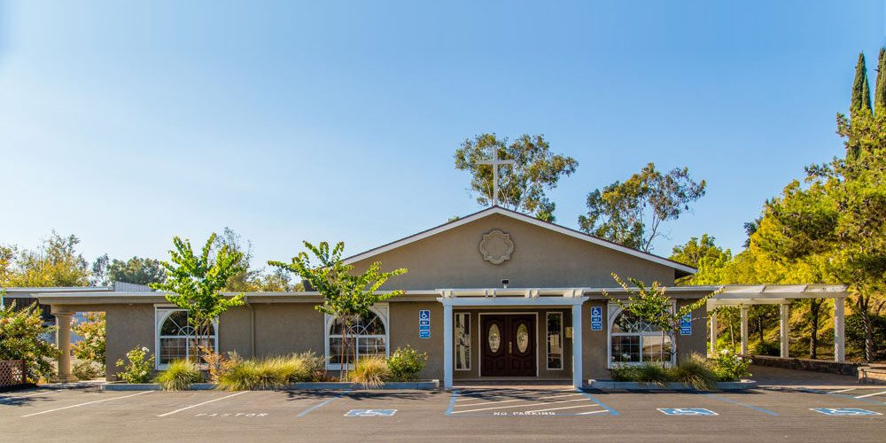

I was glad when they said to me, “Let us go to the house of the Lord!”
Psalm 122:1
Gathered in Bonita since 1972
Our mission
Bringing glory to God
Bonita Orthodox Presbyterian Church is steadfastly committed to the worshipping of our Lord and Savior, Jesus Christ, and thereby bringing glory to God. We seek to bring glory to Him in the preaching of the Gospel and in living as faithful witnesses for Christ.
Can’t be here?
Both Sunday services are streamed live and kept afterwards on our YouTube channel.
Every week
Sunday
All ages
The main gathering of the congregation
A second service to close the day
Wednesday
Family Bible Study & Prayer
All ages · at the church
Soli Deo Gloria
To God alone be the glory
The five solas of the Reformation, held by this congregation and the Orthodox Presbyterian Church.
- Sola ScripturaScripture alone
- Sola GratiaGrace alone
- Sola FideFaith alone
- Solus ChristusChrist alone
- Soli Deo GloriaTo the glory of God alone
“You stand before God as if you were Christ, because Christ stood before God as if he were you.”
If you have never been
Your first Sunday
What to expect when you visit for the first time.
- Getting there
- Plenty of parking right on site, with accessible spaces near the front doors. Come in through the front; someone will be there to meet you.
- The service itself
- We sing, we pray, we read the Scriptures together, and we sit under the preaching of the Word. You will not be asked to stand, introduce yourself, or give anything.
- Your children
- Children stay with their families in the service, and we are glad to hear them. We also have a nursery.
Recent preaching
Sermons
Sermons from both Sunday services are posted to our YouTube channel.
Our history
The congregation built this building
Bonita began in 1971 as a weeknight prayer group among members of the Point Loma congregation. The first worship service was held on September 17, 1972, at Ella B. Allen School, with forty-four people present.
Ground was broken on Central Avenue on April 24, 1977. For the nine months that followed, the congregation did the work itself on Saturday mornings — digging ditches, laying pipe, setting the forms for the foundation — and began each work day with devotions at eight o’clock. The first service in the finished building was held on Christmas Day, 1977.

Find us
5111 Central Avenue
Bonita, CA 91902
Off Central Avenue, with plenty of parking on site.